This article provides tips on how to effectively manage your
CVAT subscriptions, including tracking expenses and canceling
unnecessary subscriptions, to optimize your finances and save time.
Whether you’re a business owner or an individual,
you’ll learn how to take control of your subscriptions and manage them.
This section outlines the paid plans available on CVAT.ai.
Monthly plans
Name
Description
Solo
The Solo plan has a fixed price and is designed for personal use only.
It does not assume collaboration with team members and is not suitable for use within organizations, but it removes all other limitations of the Free plan.
Note: Although it allows the creation of an organization and access for up to 2 members – it is for trial purposes only! Organization and members will have all the limitations of the Free plan.
Team
The Team is for collaboration, it removes limitations of the Free plan for the whole organization, allowing you to share paid benefits with your colleagues.
The monthly payment for the plan depends on the number of team members you’ve added. All limits of the Free plan will be removed.
Note: The organization owner is also part of the team. So, if you have two annotators working, you’ll need to pay for 3 seats (2 annotators + 1 organization owner).
Annual plans
Whether you’re a new user, or have a subscription to Team or Solo plan, you can
subscribe to our annual plan
and save up to 30% on CVAT.ai usage costs.
The annual subscription offers all the benefits of our paid plans but at
a more affordable monthly rate.
How to add VAT/tax and other information to the CVAT.ai invoice before the first payment?
To ensure VAT (tax) information and other relevant details are included on your CVAT.ai invoices,
it’s important to add this information before making the first payment.
Here’s how you can do it:
Sign up for a CVAT.ai account and log in.
(Optional) If you add the VAT/tax number to the organization,
first create an organization and
switch to an Organization account.
Navigate to the top right corner, next to the nickname,
click on the arrow > upgrade to the plan.
Switch on the I would like the invoice to include additional
data (address, phone number, VAT information) toggle, select the
best payment period for you, and click Get Started.
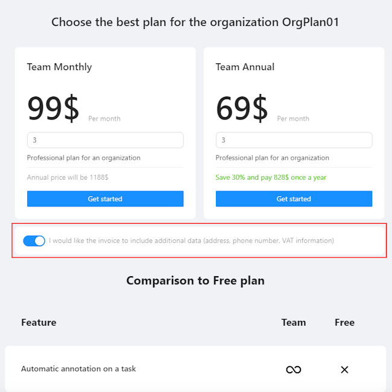
You will see the billing page:
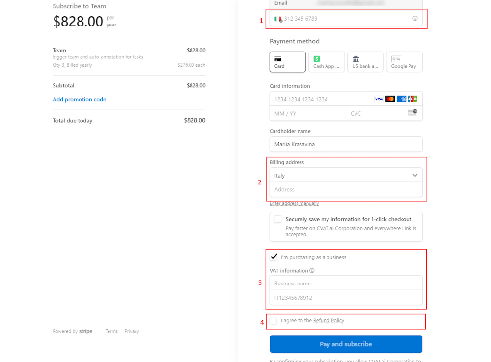
Phone number (1).
Billing Address: Enter the billing address you want to appear on the invoice
in the address field (2).
VAT Information and Business Name: Select the checkbox I am purchasing as a business and enter
your VAT and business name information (3).
Select checkbox I agree to refund policy(4).
Note: Please read the Refund policy before selecting the checkbox.
Click Pay & Subscribe.
All information you’ve added will appear on the billing page and in the invoice.
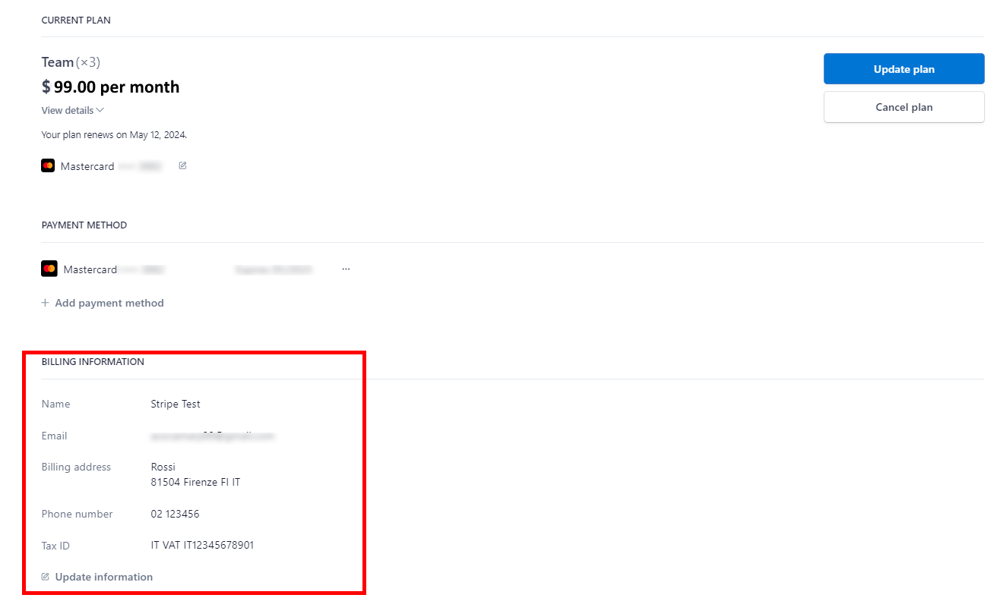
By following these steps, you can seamlessly add VAT and other crucial information to your
invoices, making your financial transactions with CVAT.ai transparent and compliant.
How to update VAT/tax information and other details for upcoming invoices from CVAT.ai?
In the top right corner, near the nickname, click on the arrow > manage plan.
You will see the Stripe page. Go to the Billing Information > Update Information.
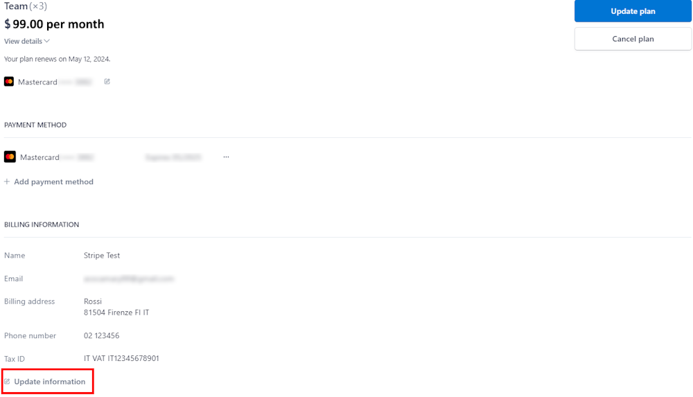
Can a paid invoice be modified?
Once an invoice has been paid, it is not possible to modify it. This restriction is due to the
limitations of the payment processing platform used, which in the case of CVAT.ai, is Stripe.
Stripe’s policy dictates that revisions to an invoice can only be made before payment.
For more comprehensive information on this policy, please refer to Stripe’s official documentation
on invoice edits
at their website.
How can I get a quote before I subscribe? How to add a PO number to my invoices?
If you require a quote from CVAT for payment via bank transfer, certain criteria must be met:
The total subscription cost must be $396 and up per year.
Quotes are available exclusively for annual subscriptions.
Should you meet these requirements, please write to support@cvat.ai
Can you sign an agreement before I subscribe?
Sign of specific agreements and approvals are available if you meet specific criteria
(the total subscription cost must be $10,000 and up per year), for more details contact support@cvat.ai
Can you handle a bank transfer with 30-day payment terms?
Yes, it is available if you fit the quota criteria, for details contact support@cvat.ai.
Where can I find my invoices?
In the top right corner, near the nickname, click on the arrow > manage plan.
You will see the Stripe page.
At the bottom of the page, you will see the Invoice History section with all invoices.
Invoices are automatically sent to the account owner’s address used for the registration.
To see the invoice click on the Show Invoice Icon icon.
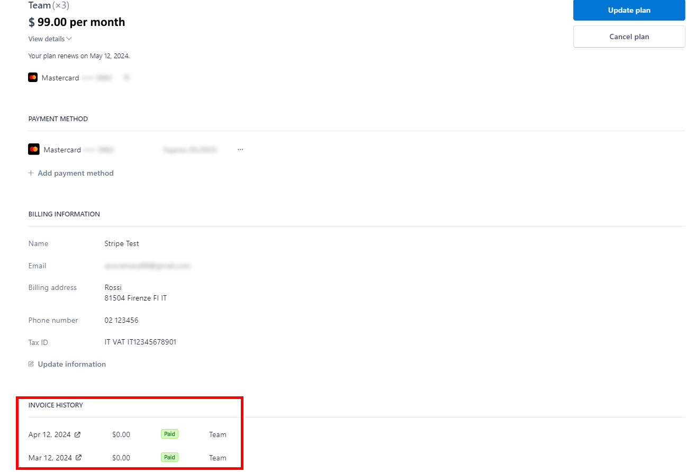
I am a student, can I have a discount or free access?
To consider your request for a discount, we’d need a few details from you:
A copy of your valid student ID or any document confirming your university affiliation.
Your university advisor’s contact details.
The name and contact information of the dean of your faculty.
A brief outline of your project plan. This helps us understand how we might collaborate
on a joint marketing statement highlighting your use of CVAT.ai, and how it can benefit your project.
We’d also appreciate a positive LinkedIn post about your experience using CVAT, making sure to tag @CVAT.ai.
All these details must be sent to support@cvat.ai. Once we have this
information, we’ll gladly offer you a 50% discount for one year.
Payment methods
This section describes how to change or add payment methods.
Paying with bank transfer
Note At the moment this method of payment
works only with US banks.
To pay with a bank transfer:
Go to the Upgrade to Solo/Team plan> Get started.
Click US Bank Transfer.
Upon successful completion of the payment, you will receive a receipt via email.
Note that the completion of the payment process may take up to three banking days.
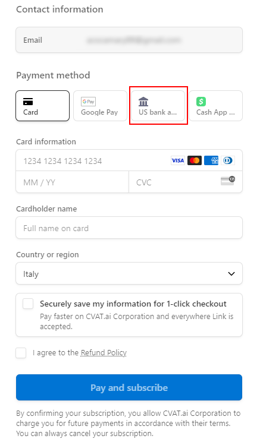
How to change the payment method?
In the top right corner, near the nickname, click on the arrow > manage plan > +Add Payment Method
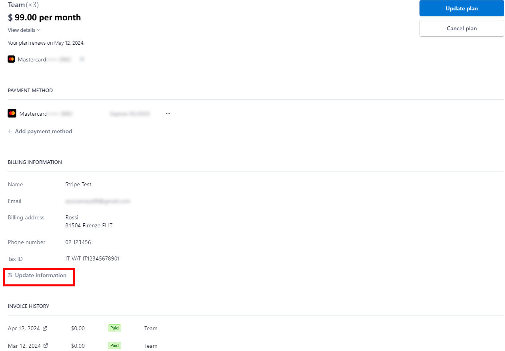
Adding and removing team members
Solo plan is for personal use only, you cannot add or remove team members.
Team plan is for collaboration. To add members to your Organization,
go to the Manage Team plan > Update quantity.
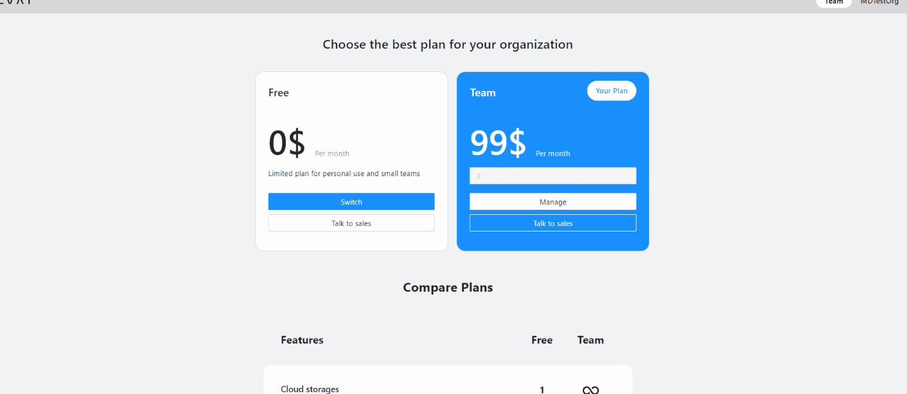
If you’ve added a user before the current billing period ends,
the payment will be prorated for the remaining time until the
next billing cycle begins. From the following month onward,
the full payment will be charged.
In case you removed the user before the current billing period ends,
funds will not be returned to your account,
but next month you will pay less by the amount of unused funds.
Change plan
How to change the plan from Solo to Team?
The procedure is the same for both Solo and Team plans.
If for some reason you want to change your plan, you need to:
How to switch from a monthly subscription to an annual one?
If you have monthly subscription, and wish to switch to the
Annual plan, please follow these steps:
In the top-right corner, near the nickname, click on the arrow.
Select Manage Solo/Team Plan.
On the Stripe page that appears, click Update Plan.
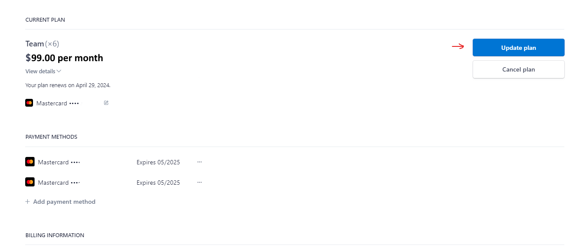
Choose Yearly and then click Continue.
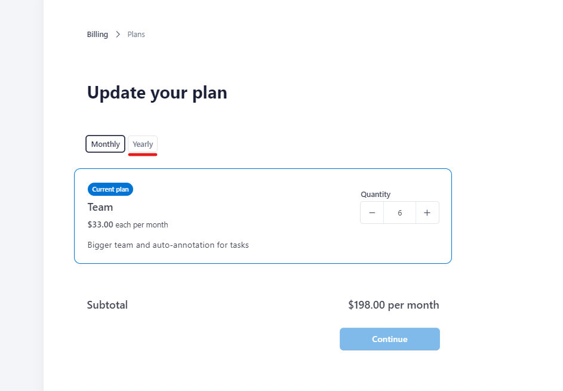
The price will be adjusted according to the number of members, selected in the
Quantity field (if updated), taking into account the amount of money
that was not spent in the current period.
Upon payment, your subscription will be renewed and the start
date will be reset to the day you switch to the new plan.
Can I subscribe to several plans?
Paid plans are not mutually exclusive.
You can have several active subscriptions,
for example, the Solo plan and several Team
plans for different organizations.
Cancel plan
This section describes how to cancel your CVAT subscription
and what will happen to your data.
What will happen to my data?
Once you have terminated your subscription, your data will remain
accessible within the system for a month. During this period,
you will be unable to add new tasks and free plan limits will be applied.
In case you possess a substantial amount of data,
it will be switched to read-only mode. It means
you will not be able to save annotations, add any resources,
and so on.
Following the one month, you will receive a
notification requesting you to either remove the
excess data or it will be deleted automatically.
How to cancel any plan?
To cancel the plan, in the top right corner, near the nickname,
click on the arrow> manage plan > Cancel plan
Please, fill out the feedback form, to help us improve our platform.
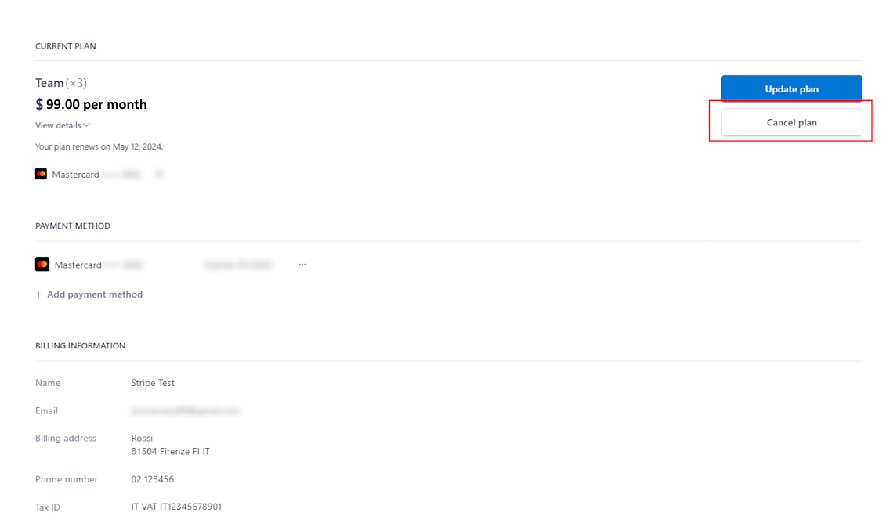
How can I get a refund?
To understand if you are eligible for a refund,
see Refund policy.
Cancel the subscription before asking for a refund.
Contact our support team at support@cvat.ai
or use the “Support” option in the app.cvat.ai interface.
Provide your account details and a brief explanation of the reason for the refund:
Send us your last invoice.
Send us the username and e-mail address you’ve used to register in CVAT.ai.
Our team will review your request. We may request additional information if needed.
Once approved, the refund will be processed to your original
payment method within 5-10 business days.
Plan renewal
To renew your CVAT.ai subscription, in the top right corner, near the nickname,
click on the arrow> manage plan > Renew plan.
Subscription management video tutorial
2 - Social auth configuration
Social accounts authentication for a Self-Hosted solution
On the left menu, select OAuth consent, then select
User type (Internal or External), and click Create.
On the OAuth consent screen fill all required fields, and click Save and Continue.
On the Scopes screen, click Add or remove scopes and
select auth/userinfo.email, auth/userinfo.profile, and openid.
Click Update, and Save and Continue.
For more information, see Configure Auth Consent.
On the left menu, click Credentials, on the top
menu click + Create credentials, and select OAuth client ID.
From the Application Type select Web application and
configure: Application name, Authorized JavaScript origins, Authorized redirect URIs.
For example, if you plan to deploy CVAT instance on https://localhost:8080, add https://localhost:8080
to authorized JS origins and https://localhost:8080/api/auth/social/goolge/login/callback/ to redirect URIs.
Create configuration file in CVAT:
Create the auth_config.yml file with the following content:
There are 2 basic steps to enable GitHub account authentication.
Open the GitHub settings page.
On the left menu, click <> Developer settings > OAuth Apps > Register new application.
For more information, see Creating an OAuth App
Fill in the name field, set the homepage URL (for example: https://localhost:8080),
and authentication callback URL (for example: https://localhost:8080/api/auth/social/github/login/callback/).
Create configuration file in CVAT:
Create the auth_config.yml file with the following content:
Note: You can also configure GitHub App,
but don’t forget to add required permissions.
In the Permission > Account permissions > Email addresses must be set to read-only.
Authentication with Amazon Cognito
To enable authentication with Amazon Cognito for your CVAT instance, follow these steps:
Application name: Specify a desired name, or leave the autogenerated one
Return URL (optional): Specify the CVAT redirect URL
(<http|https>://<cvat_domain>/api/auth/social/amazon-cognito/login/callback/).
This setting can also be updated or specified later after the app client is created.
Navigate to the Login pages tab of the created app client
Check the parameters in the Managed login pages configuration section and edit them if needed:
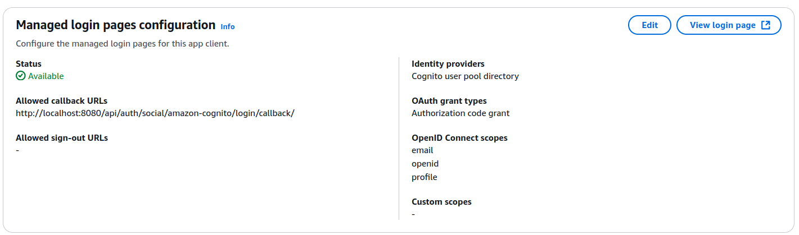
Allowed callback URLs: Must be set to the CVAT redirect URL
Identity providers: Must be specified
OAuth grant types: The Authorization code grant must be selected
OpenID Connect scopes: OpenID, Profile, Email scopes must be selected
Setting up social authentication in CVAT
To configure social authentication in CVAT, create a configuration file
(auth_config.yml) with the following content:
To find the client_id and client_secret values, navigate to the created app client page
and check the App client information section. To find domain, look for the Domain item in the list on the left.
Once the configuration file is updated, several environment variables must be exported before running CVAT:
exportAUTH_CONFIG_PATH="<path_to_auth_config>"exportCVAT_HOST="<cvat_host>"# cvat_port is optionalexportCVAT_BASE_URL="<http|https>://${CVAT_HOST}:<cvat_port>"
Start the CVAT enterprise instance as usual.
That’s it! On the CVAT login page, you should now see the option Continue with Amazon Cognito.
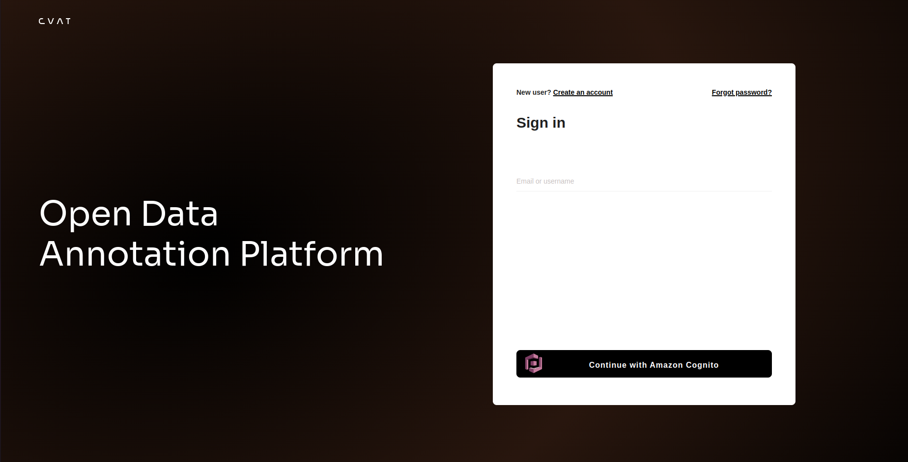
3 - Shapes converter
How to perform bulk actions on filtered shapes
The shapes converter is a feature that enables bulk actions on filtered shapes. It allows you to perform mutual
conversion between masks, polygons and rectangles.
Note: All shapes converter work only when the filter is set up.
Annotations actions can be accessed from the annotation menu.
To access it, click on the burger icon
and then select Run actions.
Note: All Shapes converter functions work in alignment with set up filter.
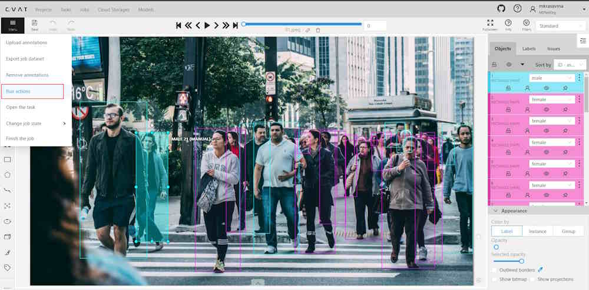
You will see the following dialog:
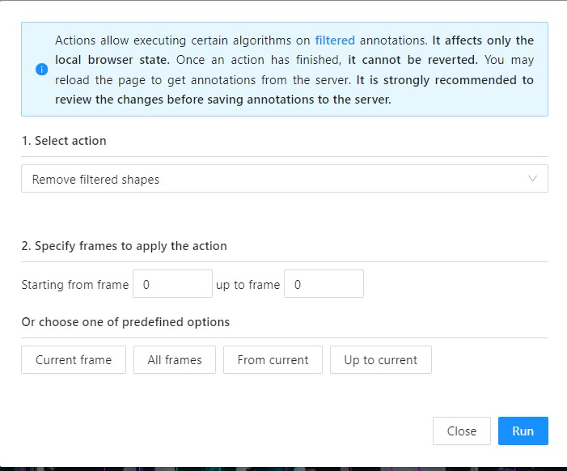
With the following fields:
Field
Description
Select action
Drop-down list with available actions:
Remove filtered shapes - removes all shapes in alignment with the set-up filter. Doesn’t work with tracks.
Propagate shapes - propagates all the filtered shapes from the current frame to the target frame.
Shapes converter: masks to polygons - converts all masks to polygons.
Shapes converter: masks to rectangles - converts all masks to rectangles in alignment with the set-up filter.
Shapes converter: polygon to masks - converts all polygons to masks.
Shapes converter: polygon to rectangles - converts all polygons to rectangles.
Shapes converter: rectangles to masks - converts all rectangles to masks.
Shapes converter: rectangles to polygons - converts all rectangles to polygons.
Note: only Propagate shapes and Remove filtered shapes is available in the community version.
Specify frames to run action
Field where you can specify the frame range for the selected action. Enter the starting frame in the Starting from frame: field, and the ending frame in the up to frame field.
If nothing is selected here or in Choose one of the predefined options section, the action will be applied to all fields.
Choose one of the predefined options
Predefined options to apply to frames. Selection here is mutually exclusive with Specify frames to run action.
If nothing is selected here or in Specify frames to run action section, the action will be applied to all fields.
Convert shapes
Recommended Precautions Before Running Annotation Actions
Saving changes: It is recommended to save all changes prior to initiating the annotation action.
If unsaved changes are detected, a prompt will advise to save these changes
to avoid any potential loss of data.
Disable auto-save: Prior to running the annotation action, disabling the auto-save feature
is advisable. A notification will suggest this action if auto-save is currently active.
Committing changes: Changes applied during the annotation session
will not be committed to the server until the saving process is manually
initiated. This can be done either by the user or through the
auto-save feature, should it be enabled.
Choose the action you need from the Select action drop-down list.
(Optional) In the Starting from frame field, enter the frame number where the action should begin,
and in the up to frame field, specify the frame number where the action should end.
(Optional) Select an option from Or choose one of the predefined options to apply the action.
Click Run. A progress bar will appear. You may abort the process by clicking Cancel until the process commits modified objects at the end of pipeline.
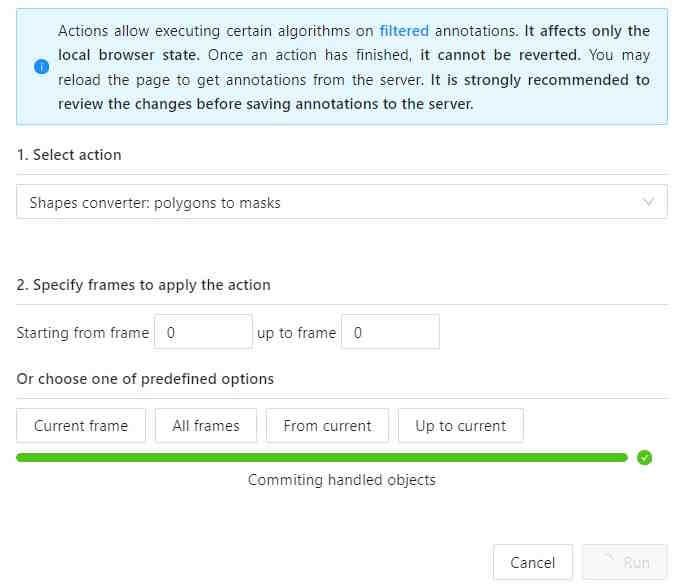
Note: Once the action is applied, it cannot be undone.
Convert shapes video tutorial
4 - Immediate job feedback
Quick responses about job annotation quality
Overview
The basic idea behind this feature is to provide annotators with quick feedback on their
performance in a job. When an annotator finishes a job, a dialog is displayed showing the
quality of their annotations. The annotator can either agree or disagree with the feedback.
If they disagree, they have the option to re-annotate the job and request feedback again.
To ensure transparency with the annotator, the immediate feedback shows the computed score and
the minimum required score. Information about the specific errors or frames that have errors is
not available to annotators.
Feedback is only available a limited number of times for each assignment, to prevent
Ground Truth revealing by annotators. This is controlled by a configurable parameter, so
it can be adjusted to the requirements of each project.
How to configure
Immediate feedback settings, such as Target metric, Target metric threshold,
Max validations per job and others, can be configured on the quality settings page.
This feature is considered enabled if the Max validations per job is above 0. You can change
the parameters any time.
Note: This feature requires a configured validation set in the task. Read more
in the
quality overview
section or in the
full guide.
Open the task Actions menu > Quality control > Settings
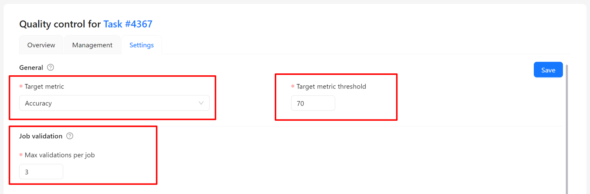
Set the Target metric and Target metric threshold values to what is required in your project.
Set Max validations per job to above zero. 3 is a good starting number.
Save the updated settings
How to receive a feedback
Assign an annotator to an annotation job
Annotate the job
Mark the job finished using the corresponding button in the menu
Once the job is completed, you’ll see the job validation dialog
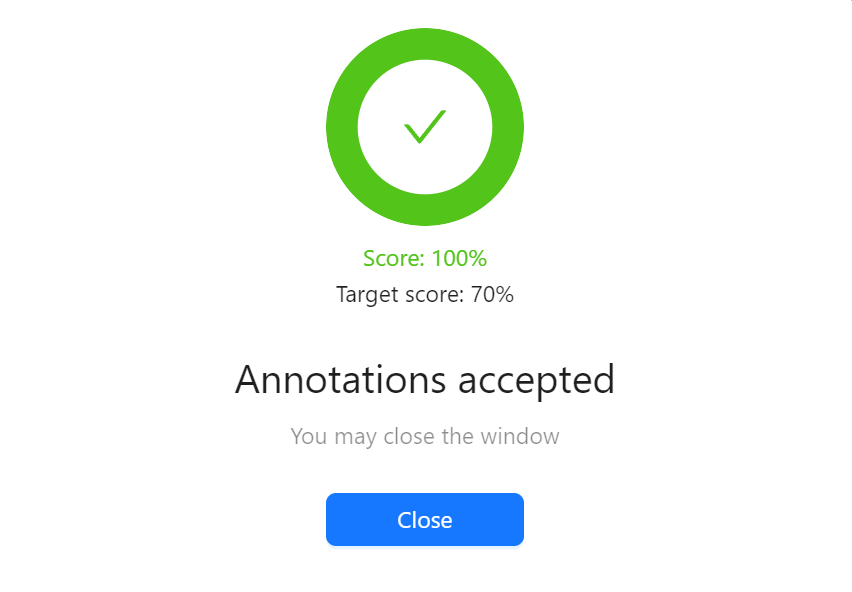
Each assignee gets no more than the specified number of validation attempts.
Note: this functionality is only available in regular annotation jobs. For instance,
it’s not possible to use it in Ground Truth jobs.
Available feedbacks
There are three types of feedbacks available for different cases:
Accepted
Rejected, with an option to fix mistakes
Finally rejected when the number of attempts is exhausted
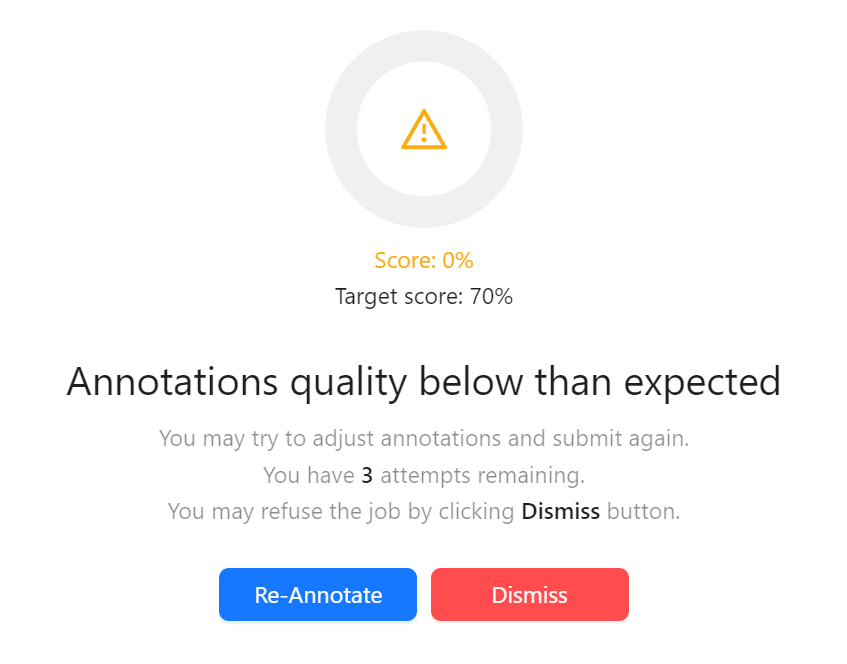
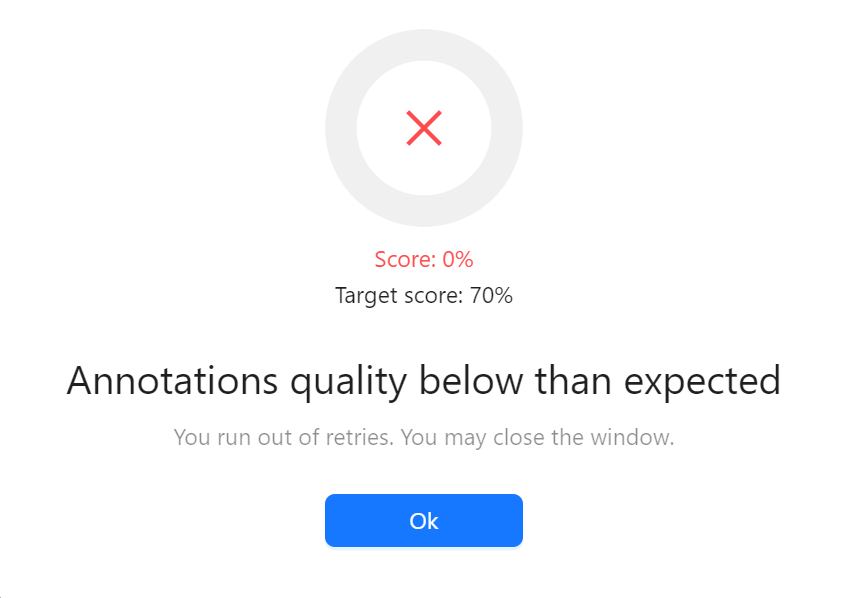
Additional details
Immediate feedback has a default timeout of 20 seconds.
Feedback may be unavailable for large jobs or when there are too many immediate feedback requests.
In this case annotators do not see any feedback dialogs and annotate jobs as
if the feature was disabled.
The number of attempts does not decrease for staff members who have access to a job
with ground truth annotations. For instance, if you’re trying to test this feature as the task
owner, you may be confused if you see the number of attempts doesn’t decrease.
The number of attempts resets when the job assignee is updated.
5 - Segment Anything 2 Tracker
Accelerating video labeling using SAM2 model
Overview
Segment Anything 2 is a segmentation model that allows fast and precise selection of any object in videos or images.
For enterprise customers, this model can be installed in their self-hosted solution. To ensure a good experience,
it is strongly recommended to deploy the model using a GPU. Although it is possible to use a CPU-based version,
it generally performs much slower and is suitable only for handling a single parallel request. Unlike a regular
tracking model, the SAM 2 tracker is implemented as an annotation action. This allows it to be applied to existing
objects (polygons and masks) to track them forward for a specified number of frames.
How to install
Note: This feature is not available in the community CVAT version.
Note: This feature requires the enhanced actions UI plugin, which is enabled by default.
Usually, no additional steps are necessary on this.
Docker
You can use existing scripts from the community repository
(./serverless/deploy_cpu.sh or ./serverless/deploy_gpu.sh).
To deploy the feature, simply run:
./serverless/deploy_gpu.sh "path/to/the/function"
Kubernetes
You need to deploy the Nuclio function manually.
Note that this function requires a Redis storage configured to keep the tracking state.
You may use the same storage as cvat_redis_ondisk uses.
When running the nuclio deploy command, make sure to provide the necessary arguments.
The minimal command is:
The tracker can be applied to any polygons and masks. To run the tracker on an object, open the object menu and click
“Run annotation action”.
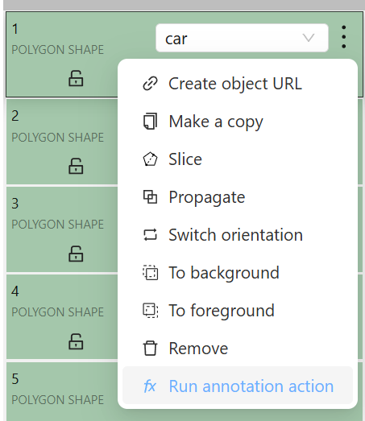
Alternatively, you can use a hotkey: select the object and press Ctrl + E (default shortcut).
When the modal opened, in “Select action” list, choose Segment Anything 2: Tracker:
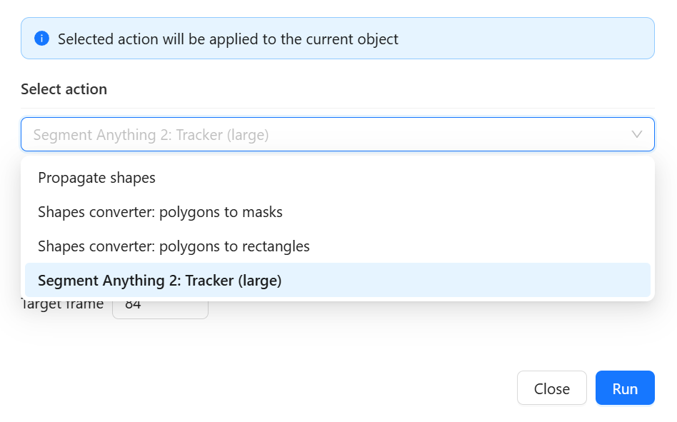
Specify the target frame until which you want the object to be tracked,
then click the Run button to start tracking. The process begins and may take some time to complete.
The duration depends on the inference device, and the number of frames where the object will be tracked.
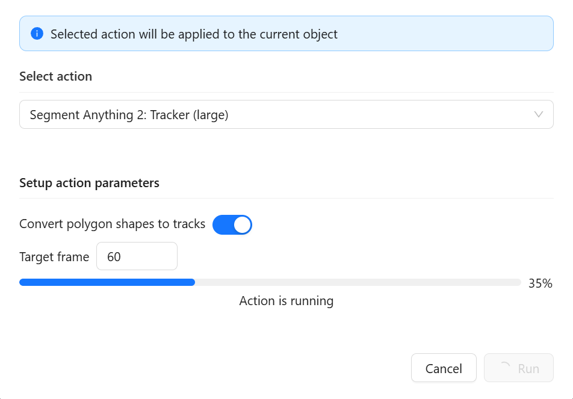
Once the process is complete, the modal window closes. You can review how the object was tracked.
If you notice that the tracked shape deteriorates at some point,
you can adjust the object coordinates and run the tracker again from that frame.
Running on multiple objects
Instead of tracking each object individually, you can track multiple objects
simultaneously. To do this, click the Menu button in the annotation view and select the Run Actions option:
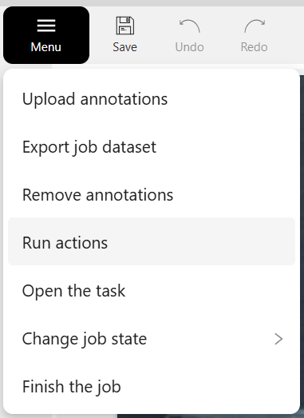
Alternatively, you can use a hotkey: just press Ctrl + E (default shortcut) when there are no objects selected.
This opens the actions modal. In this case, the tracker will be applied to all visible objects of suitable types
(polygons and masks). In the action list of the opened model, select Segment Anything 2: Tracker:
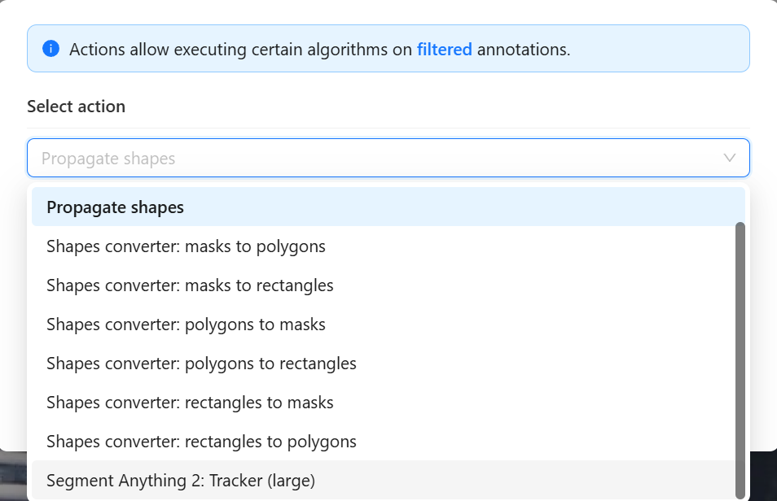
Specify the target frame until which you want the objects to be tracked,
then click the Run button to start tracking. The process begins and may take some time to complete.
The duration depends on the inference device, the number of simultaneously tracked objects,
and the number of frames where the object will be tracked.
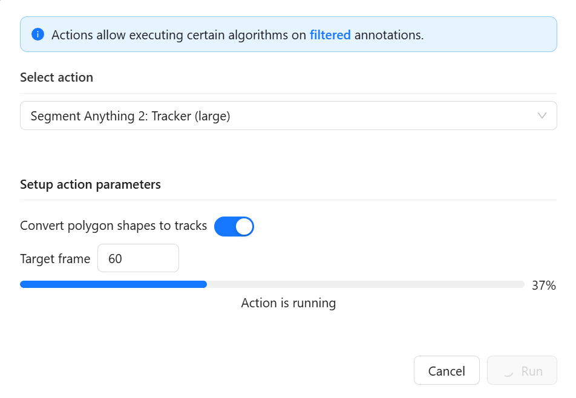
Once the process finishes, you may close the modal and review how the objects were tracked.
If you notice that the tracked shapes deteriorate, you can adjust their
coordinates and run the tracker again from that frame (for a single object or for many objects).
Tracker parameters
Target frame: Objects will be tracked up to this frame. Must be greater than the current frame
Convert polygon shapes to tracks: When enabled, all visible polygon shapes in the current frame will be converted
to tracks before tracking begins. Use this option if you need tracks as the final output but started with shapes,
produced for example by interactors (e.g. SAM2 or another one).